Rozwiązania problemów z połączeniem n8n z Telegramem¶
Połączenie workflow z botem w Telegramie nie działa¶
- Na stronie Telegrama w adresie www przeglądarki jest numer, który potrzebujemy jako Chat ID. 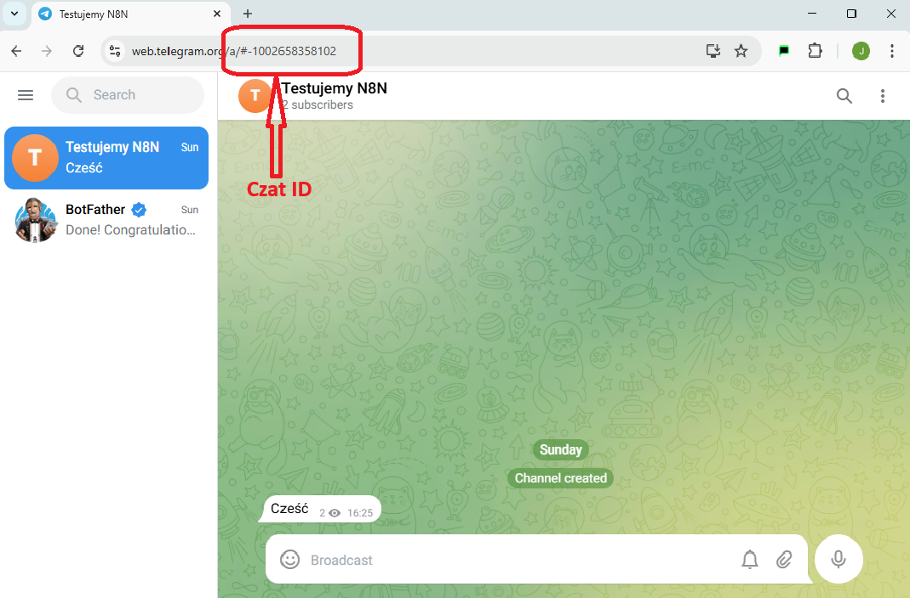
- Są przypadki, że ten numer nie ma na początku
-100. Wtedy do skopiowanego numeru należy taki początek dodać ręcznie.
Trigger do nasłuchiwania na wiadomości z Telegrama zgłasza błąd¶
-
Uruchamiam workflow, w którym mam node nasłuchujący na Telegram i mam taki błąd 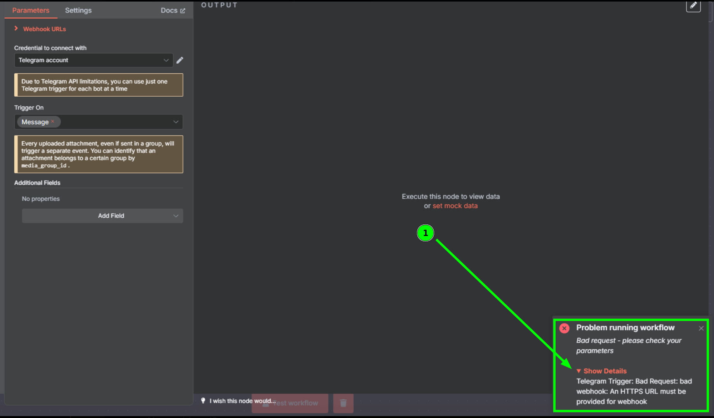
-
Należy ustawić zmienną środowiskową
WEBHOOK_URLi jej wartość ustawić na domenę, którą mamy zngrok
WAŻNE! : wartość którą wpisujemy powinna mieć postać https://TWOJA_DOMENA_NGROK
Trigger do nasłuchiwania na wiadomości z Telegrama nie reaguje¶
-
Uruchamiam workflow z
Triggerem Telegrama. Trigger się kręci i nie reaguje na moje wiadomości -
W pierwszej kolejności sprawdź czy masz poprawnie ustawiony
WEBHOOK_URLw zmiennych środowiskowych. Możesz to sprawdzić w zakładceEnvw ustawieniach konteneran8n. Instrukcja jak to zrobić znajduje się tutaj. Kliknij
Należy tam szukać linijki WEBHOOK_URL=https://twoja-domena-z-ngrok.free.app. To bardzo ważne żeby na początku było https://
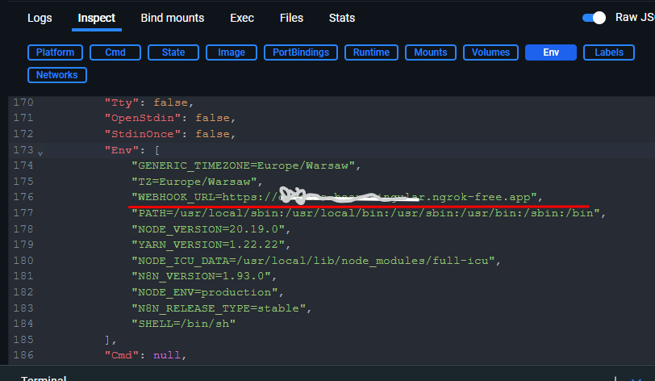
-
Jeśli masz tam taką wartość, to sprawdź czy Twój kontener
ngrokjest prawidłowo uruchomiony W tym celu otwórz stronęlocalhost:4040/status. Jest to strona kontenerangrokuruchomionego na Twoim komputerze. -
Jeśli strona się nie wyświetla. To znaczy, że kontener ngrok nie jest uruchomiony i należy go uruchomić 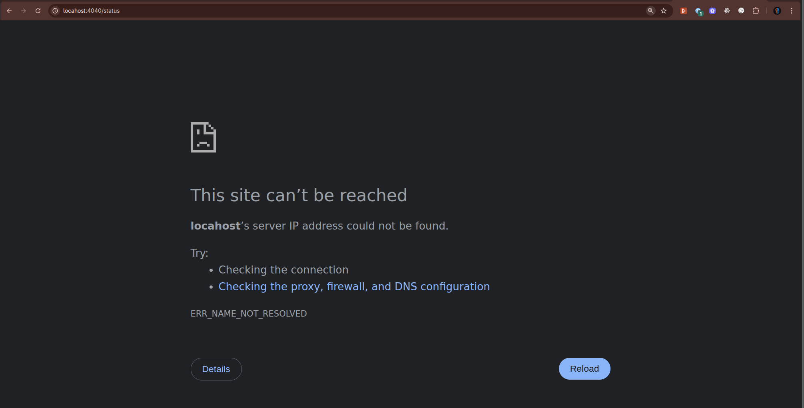
-
Jeśli
ngrokjest prawidłowo uruchomiony to zobaczysz stronę statusu 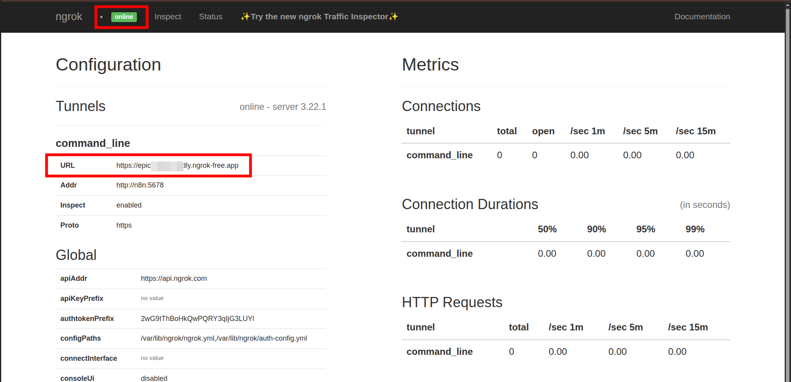 Porównaj jeszcze raz wartość polaURLz tym co masz wWEBHOOK_URL
Przesyłanie zdjęcia przez Telegram do agenta nie działa. Zatrzymuje się na node SWITCH¶
-
Kiedy wysyłam zdjęcie, node SWITCH pokazuje taki problem 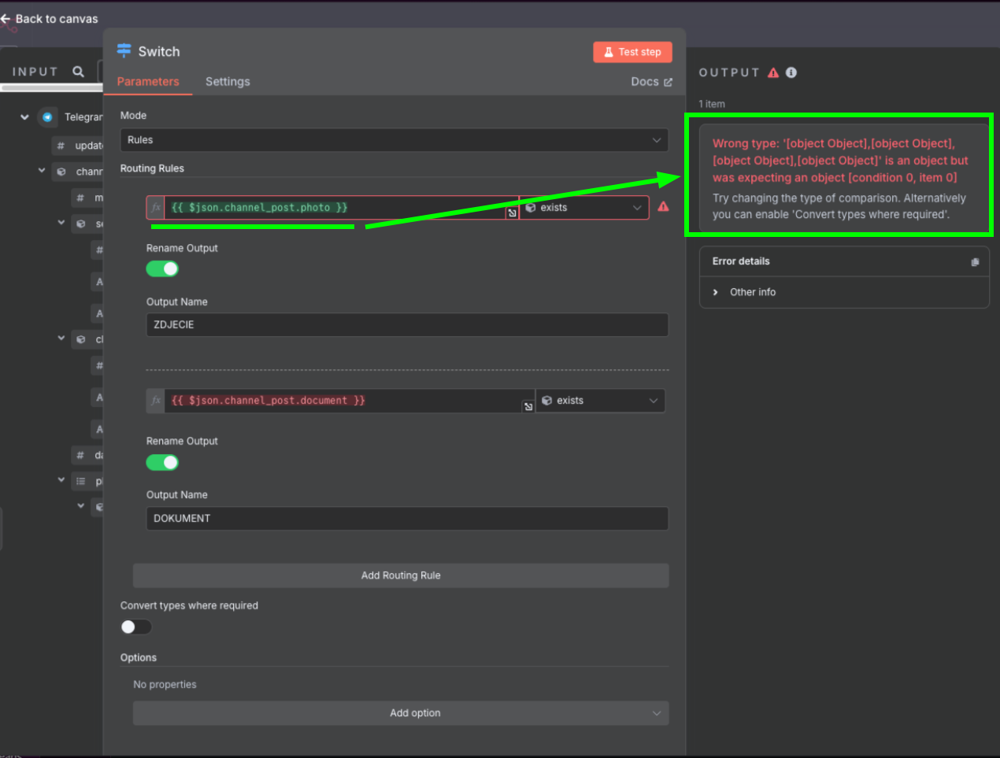
-
Zwróć uwagę, żeby w
Routing Rulesw typie porównania wybraćArray, a następnieexists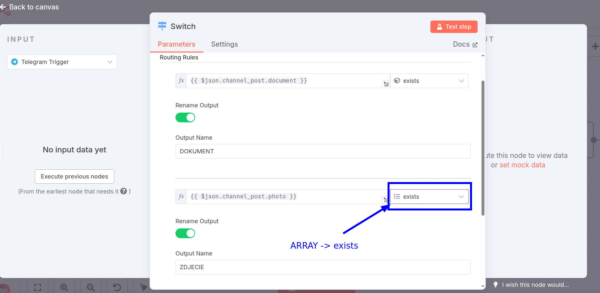 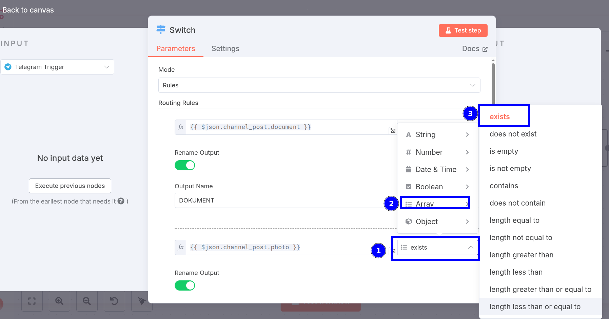
Przesyłanie zdjęcia przez Telegram do agenta nie działa. Zatrzymuje się na node Telegram Get File¶
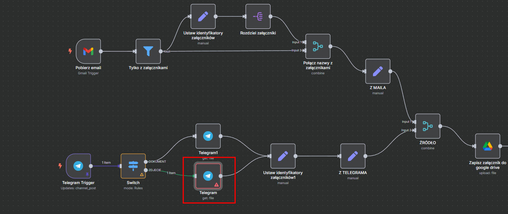 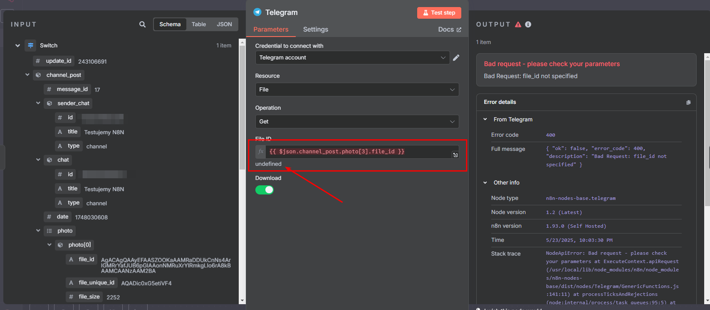
-
Tak się dzieje dlatego, że w zależności od tego jakiej jakości zdjęcie wyślemy, tyle "kopii" zdjęcia przesyła nam telegram w danej wiadomości. Jeśli przesyłamy zdjęcie słabej jakości to otrzymamy do 2 elementów Jeśli przesyłamy zdjęcie wysokiej jakości to otrzymamy od 3 elementów Wartość 3 została zaproponowana w lekcji dlatego, że dla dużych zdjęć ta jakość jest wystarczająco dobra żeby uzyskać satysfakcjonujące efekty.
-
Żeby wrokflow zawsze brał zdjęcie najwyższej jakości, niezależnie od rozmiaru zdjęcia przesłanego przez telegram należy zmienić wartość w polu
File IDna{{ $json.channel_post.photo.last().file_id }}
Wersja Web K kontra Web A¶
Telegram oferuje dwie totalnie niezależne wersje swojej aplikacji webowej (czyli tej którą uruchamiamy w przeglądarce).
Wersje te różnią się pod pewnymi względami. Rekomendujemy użycie tzw. wersji Web A dostępnej pod adresem https://web.telegram.org/a/
UWAGA: Wpisanie w przegladarke https://web.telegram.org pozwoli telegramowi lub / i przeglądarce na wybranie wersji. Wówczas wasza przeglądarka może wymuszać cały czas wersję
/k. Dopiero wskazanie na https://web.telegram.org/a przekierowuje na wersjęWeb A.
Wersja Web A jest wolna od wielu problemów, zwłaszcza w zarządaniu botami i administratorami.
Dodatkowo wszystkie nasze lekcje dotyczące Telegrama są stworzone w oparciu o wersję Web A.
Jeżeli nie wiesz na jakiej wersji pracujesz, to możesz to sprawdzić w adresie URL w przeglądarce, albo:
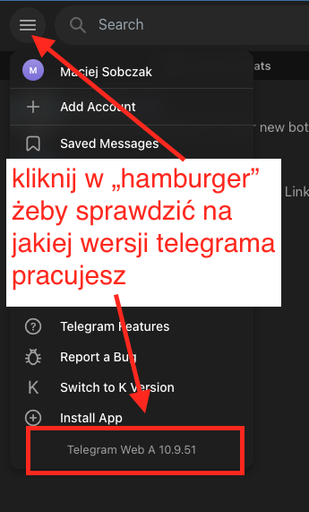
Pojawia się błąd Bad Reguest: chat not found¶
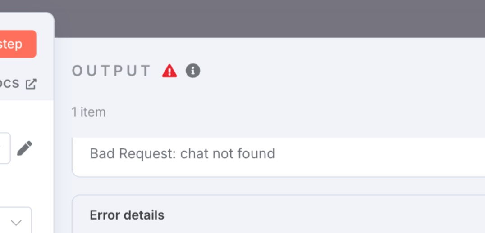 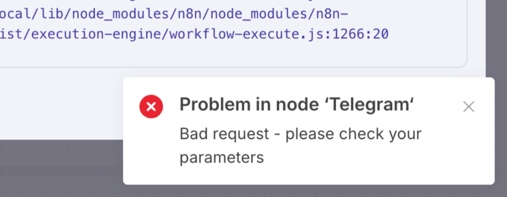
Jeśli nawet po sprawdzeniu poprawności Chat ID i tokena błąd nadal występuje, to być może mamy podłączonego jakiegoś obcego lub niepoprawnego bota jako administratora naszego czata.
-
Należy uważać już w momencie wyszukiwania
BotFather. Najlepiej wpisz pełną nazwę i wybierz tylko bota, który:- ma dokładnie taką nazwę,
- jest oznaczony jako oficjalny bot Telegrama (znaczek w kółku),
- posiada dużą liczbę użytkowników – w chwili tworzenia tego obrazka było to ponad 3,5 miliona użytkowników.

-
Trzeba zapisać lub zapamiętać dokładny
usernametworzonego bota - on jest unikatowy dla całego Telegrama i według tej nazwy będziemy potem przypinać bota jako administratora do naszego kanału w Telegramie. 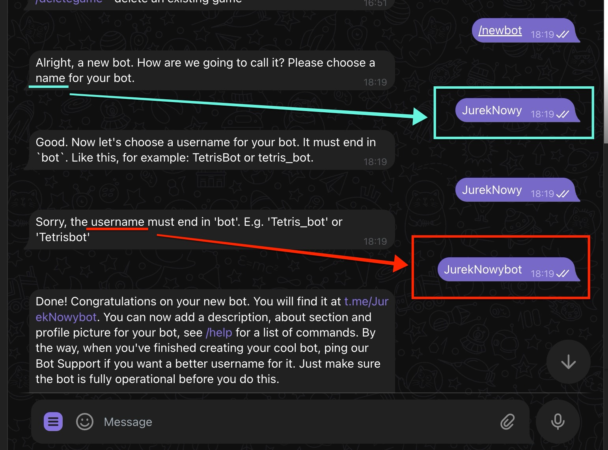 -
Podczas podłączania bota jako administratora do naszego kanału należy zachować ostrożność i wpisywać do wyszukiwarki pełny
@usernamenaszego bota. 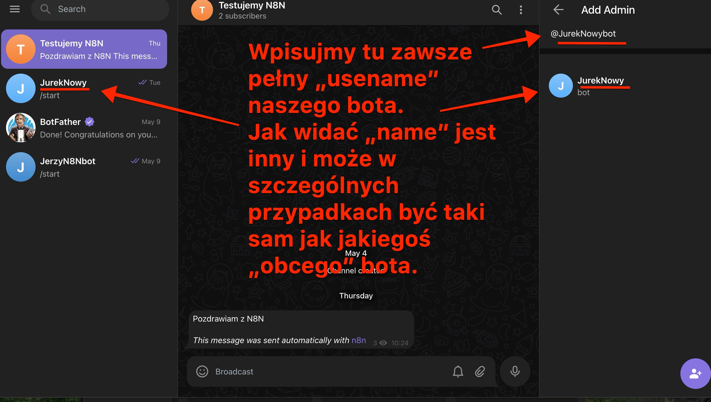
Po dodaniu bota w powyższy sposób i podłączeniu go do naszego czata oraz po ponownym uzupełnieniu Chat ID i tokena w n8n workflow powinien działać i nie zgłaszać błędu chat not found.